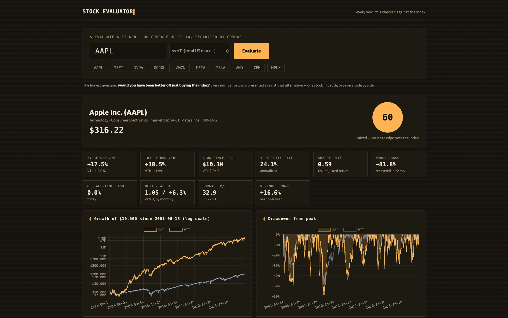
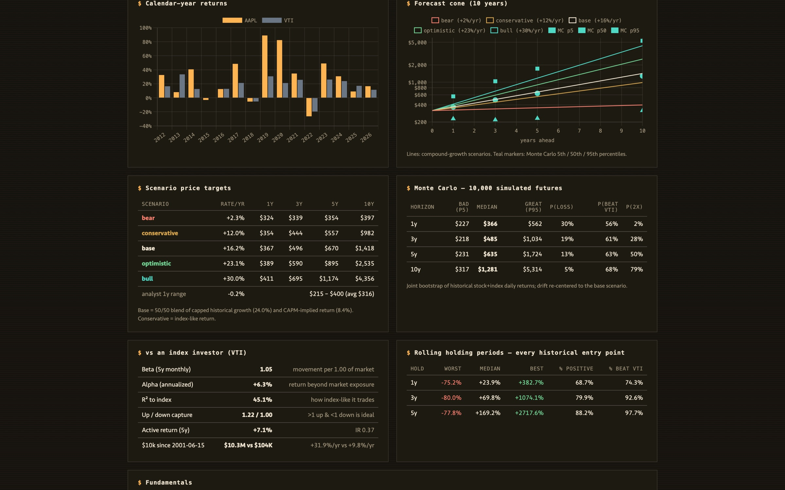
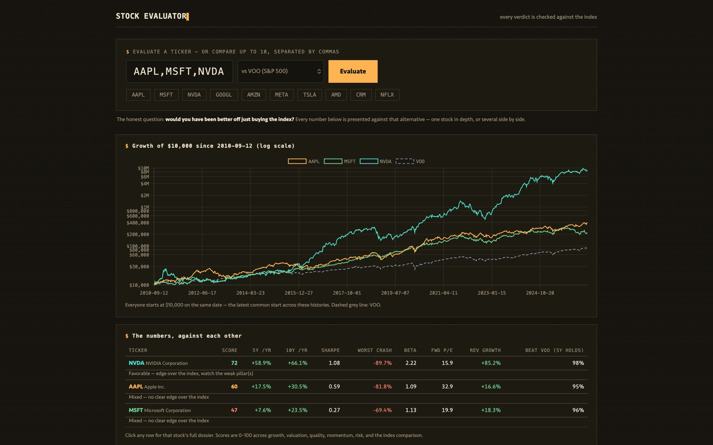
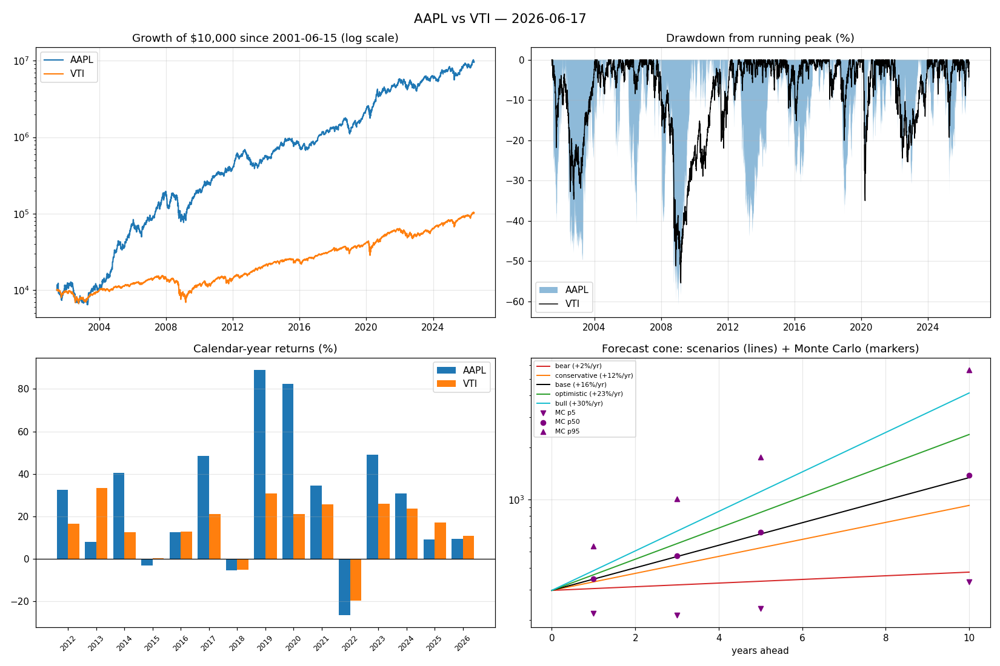

One command turns a ticker into a full dossier, and every conclusion is measured against the alternative of just buying an index fund.
The odds are public, and almost every tool ignores them.
Over long horizons, the overwhelming majority of professionally managed funds fail to beat a simple index fund (S&P's SPIVA scorecards have found it year after year), and individual investors, a large body of research has shown, tend to trail the market further still once their own buying and selling is counted. For almost everyone, the rational default is to buy the index and hold it. Consumer stock tools still lead with screeners, price targets, and “strong buy” badges, all optimized for action. The odds rarely appear in them anywhere.
Is this stock actually better than just buying the index fund?
So I built one around a single rule: every number is presented against the alternative of just holding a total-market index fund. Every verdict starts from one question: does this stock beat the index you could have bought instead? The product answers that before anything else.
It's easy to find reasons to buy a stock, and hard to see what an index investor would have earned over the same period.
Rolling win rates across every historical entry point, Monte Carlo that samples stock and index together, a reverse DCF for what's already priced in, combined into a six-pillar score with a verdict phrased against the index.
One command produces the full dossier and chart. Conservative defaults throughout: hypergrowth capped, missing data scored neutral, never punitive.
Every number the stock gets appears next to the same number for the benchmark: growth of $10,000 from a common start date, returns over matching windows, up and down capture, and win rates against it. You choose the benchmark: VTI by default, or VOO, SPY, QQQ, DIA, IWM, VXUS, even a mutual fund like FXAIX. Whatever you would actually buy instead is what the stock has to beat.

Research tools tend to get optimistic in their forecasts, so the defaults here are conservative on purpose. Past hypergrowth doesn't get extrapolated: the base scenario caps historical growth at 25% a year and blends it 50/50 with the return the market itself implies. The Monte Carlo doesn't assume tidy bell curves. It bootstraps 10,000 futures from blocks of real stock-and-index history together, so fat tails and correlation survive into the forecast. A reverse DCF states what growth today's price already assumes. And when a company's data is missing, the score treats it as neutral, never as a penalty.
A backtest from a single start date proves almost nothing. Pick the right day and anything looks great. So the tool rolls every 1-, 3-, and 5-year holding window in the stock's history and reports the whole distribution: worst, median, best, the share that ended positive, and the share that beat the index.

The tool began as a CLI: one command, a full dossier and chart. The web app above is the same engine with one control in front of it: a ticker. While it works, the status line names each stage, and a note says the first run on a ticker takes ten to thirty seconds before the cache makes it instant. Results lead with the verdict: a 0–100 score and one sentence, every table beneath it. Comparison is built in: type up to ten tickers and you get one chart where everyone starts at $10,000 on the same date, with a table ranked by score. Click any row for that stock's full dossier.

